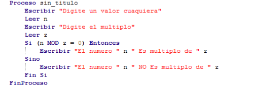

MOD obtiene el residuo y el cociente de una operacion de division utilizando las expresiones arimeticas que obtiene el modulo del primer partido por el segundo, este
se realiza de la siguiente manera en la aplicacion de Pseint:

De esa manera podria llegar a realizar una division de manera correcta en Pseint.